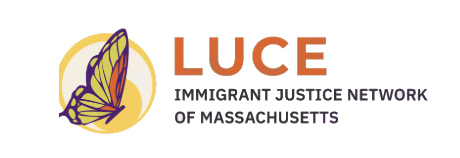

Support a JP Mom of Two
Hello everyone,
Today, I am reaching out through this platform to ask for your heartfelt support for my family.
In November last year I was stopped for a minor traffic violation. In the process of having that dismissed, immigration officials detained me. With the help of my family's church and people in the community, I was released on bond, but I am now compelled to separate from my partner and my children for an indefinite period.
My greatest concern is that, as I must leave the country, they will be left without their primary source of financial support. My partner remains behind to care for our 2-year-old baby and her older daughter; right now, they need to raise funds to move to a safe location and cover their basic living expenses—rent, food, and the children's needs—while they work to stabilize themselves during this new chapter.
I have chosen the path of voluntary departure in order to comply with regulations and preserve the opportunity to legally reunite with them in the future. However, the process is difficult, and time is working against us.
How can you help?
- Any donation, no matter how small, will go directly toward covering my family's housing and food expenses.
- If you are unable to donate, simply sharing this link would be a tremendous help to us.
We have decided to keep our identities and faces private for the sake of safety and privacy, but the need is very real and urgent. The funds will be managed by a trusted individual to ensure that the full amount reaches my partner and children.
In advance, thank you so much for your solidarity, your discretion, and for not leaving them to face this incredibly difficult time alone.